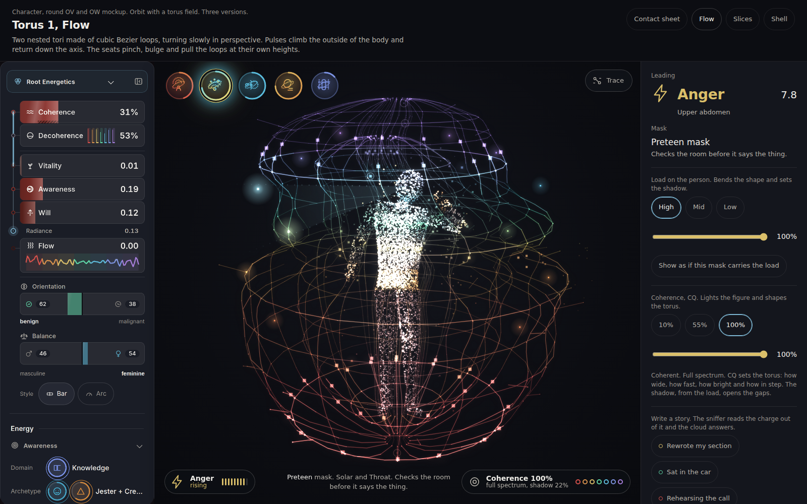
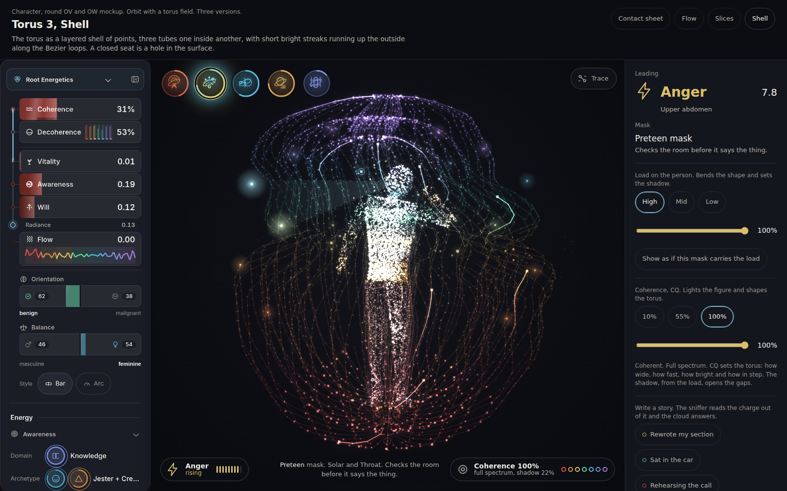
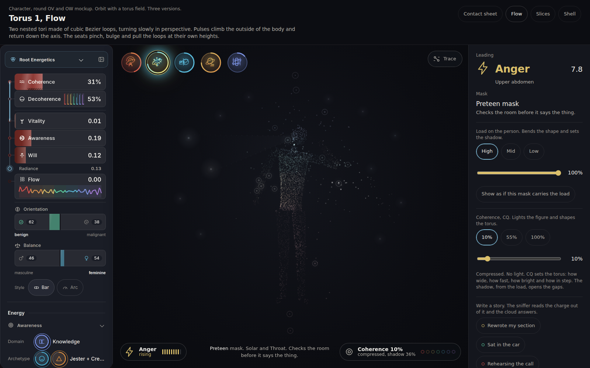
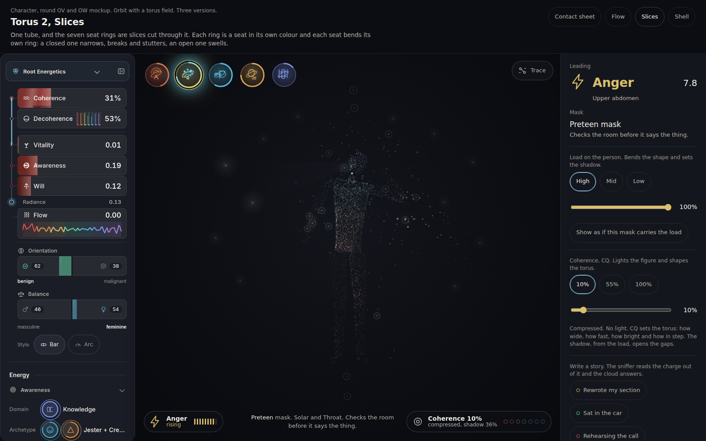
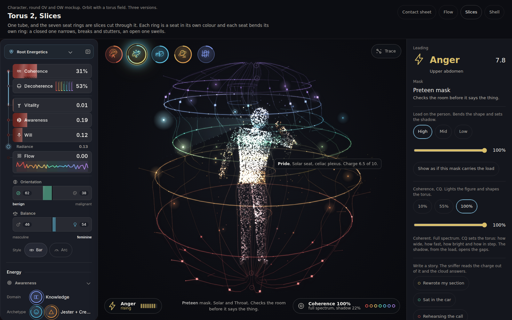
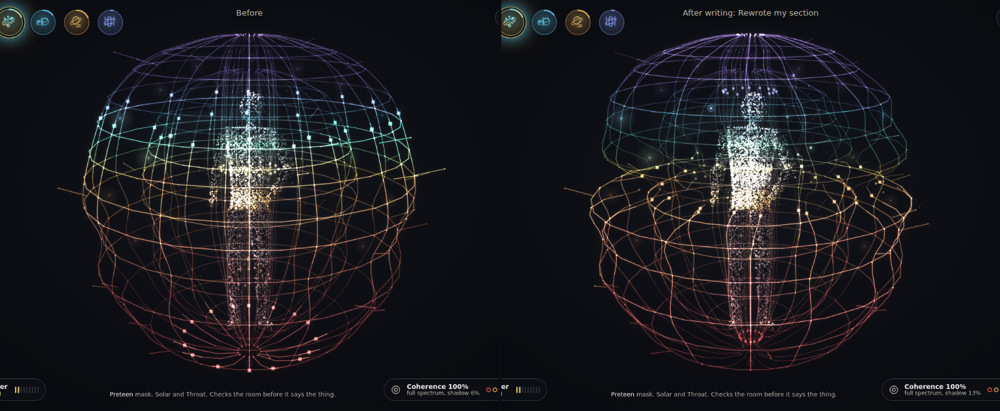

You picked Orbit and asked for a torus round it that is the health of the body. These are three ways of drawing it. In all three the field is made of cubic Bezier paths in three dimensions, projected with perspective, turning slowly about the body's axis. It enters under the feet, climbs the outside of the body, goes over the head and comes back down through the axis. Every point of it takes its colour from the air it sits in.
How wide it is, how fast it runs, how bright it is, how complete it is and how straight and in step. At 100 percent it is a full, even apple of light in the seven seat colours. At 55 percent it is partial and broken. At 10 percent it is thin, collapsed, leaking and slow, a few sparks. At 0 percent the figure is a very dim silhouette and nothing else, near black and not black.
Each of the seven seats owns a height on the torus. A seat carrying a lot of shadow pinches the field in toward the body there, runs it slow, makes it stutter, breaks it into gaps and gives it short dim rays. A seat that is open and whole swells it. A half loaded seat drags it sideways.
The same state in each: Anger leading, Preteen mask, high load, coherence 100 percent, Tomas's rail beside it. The left menu is a screenshot of the built app, not redrawn, and nothing is drawn between it and the page.

Two nested tori of Bezier loops, a lattice of meridians and rings. The cleanest and the one that reads as a torus first.
One tube, and the seven seat rings are slices cut through it, each in its seat colour. The one where a seat is most easy to point at.

Three tubes of points, one inside another, with bright streaks running up the outside. A closed seat is a hole in a surface.
| Torus 1, Flow | Torus 2, Slices | Torus 3, Shell | |
|---|---|---|---|
| What it is made of | Sixteen meridian loops and twelve on the inner torus, rings at the seat heights, short rays off the outer wall. | Fourteen thin meridian loops, and seven bold rings, one per seat, each a closed cubic Bezier circle, with a bead going round. | Thirty two, twenty six and twenty meridians drawn as points with a hairline under them, and nine streaks on the outer shell. |
| How a seat shows | A waist or a swell in the lattice at its height, dim and broken where it is closed. | The seat is a ring. A closed ring is narrow, broken and stuttering. An open one is wide and bright. | A thinning and a hole in the grain at its height. |
| Where the colour comes from | The air, entirely. | Half the air and half the seat colour, because each ring is a seat. Everything else is the air. | The air, entirely. |
| Read at a glance | A wire apple. The most geometric. | Seven coloured halos in a cage. The most symbolic, and the closest to the Orbit you picked. | A glowing jellyfish bell. The softest and the most like light. |
Six frames, a third of a second apart, a clean field at coherence 100 and low load so the climb is the thing you see. A ring of lamps leaves under the feet, climbs the outside through the root, sacral, solar, heart, throat and third eye seats, goes over the crown, and the next one is already behind it. At full coherence all the meridians are in step, so the lamps arrive as a ring and not as scattered points. Lower coherence puts them out of step.
Which way round, and why. Chosen: the flow climbs the outside of the body, goes over the head and returns down the axis, through the body. The reason is that the outside is what you see, and the axis is mostly hidden behind the cloud, so the motion you see is the motion you asked for, upward. The axis carries the quiet return, drawn at about a quarter of the strength. The reverse, rising through the axis and falling on the outside, is one switch in the right rail and one word in the address, ?flow=axis. In that direction the visible motion is downward, which reads as the field draining, so it is not the default. The same strip with the reverse flow, Torus 1:
Each seat owns a height and a reach on the torus. At that height every loop's anchor points are moved by what the seat is, and the Bezier handles, which are made from the moved anchors, carry the bend smoothly through. The mapping, and where each number comes from:
| What the seat is | How it is measured | What it does to the torus |
|---|---|---|
| Charge | The mean charge of the seat's addresses over ten (sq in the engine), taken as open at 0.08 and closed at 0.42, smoothly between. | Pinch: radius times 1 minus 0.30 charge. The torus narrows toward the body into a waist. Pull: 0.12 times four charge times one minus charge. A half loaded seat drags the loop sideways in its own fixed direction. Slow: the flow runs at 1 minus 0.72 charge there, a real bottleneck that lengthens the whole loop. Stutter: pulses flicker in held steps. Desync: the clock at that height is jittered, so meridians fall out of step. Gaps: the loop breaks, in runs and not at random. Short rays: the rays off the wall are 0.03 plus 0.14 of the seat's openness. |
| Integrity | The seat's own coherence, root up. In the engine this is bandIg(seat), the mean of that seat's laws, and in the mock it is CQ filling the seats from the root. | Bulge: 0.13 times one minus charge to the 1.4, times integrity. An open, whole seat swells. Brightness and width: lit seats are bright and wide. An unlit seat is grey and short. |
| CQ, overall | The one number in the left menu. | Size (radius from 55 to 100 percent of full), flow speed (0.035 to 0.235 loops a second), brightness, completeness (6 percent present at nothing, all present at 90 percent) and roughness (a wobble that is 0.1 of a unit at nothing and gone at full). |
Charge and CQ are not independent: as in the engine, coherence relieves load, so each address holds 42 percent less at full coherence than at none.
Tomas reads 31 percent coherence in the rail, so the first picture of each version is lit to 31 percent, which is the honest pairing. Then the ladder: one mask (Preteen), coherence 10, 55 and 100 percent across, load high then low down. Read across a row and only the light and the field change. Read down a column and only the shadow changes.
Coherence 0 is near black and not black: the figure is a very dim silhouette, about thirteen percent of full light, and nothing else. Coherence 10 is below. The pictures at 10 percent are meant to be nearly dark.


Frames at 0, 0.5, 1 and 2 seconds from the moment the page opens, stage only. At zero it is the dim silhouette. The cloud gathers into the person while it bends into the mask, and the light climbs from the floor to the person's real level over about two seconds, the torus last.
The same on a phone layout: Torus 1, Torus 2, Torus 3.
Press Trace, or press a seat. The torus stops turning so the markers stay put. A ring marks each place the flow leaves, up to three, in their seat colours, with a spray of points leaving through the wall and dropping. A dotted thread runs from the chosen leak to the card. The card is the same Trace card as before: the story, supports, then the address behind it (new, replacing the pattern step), worn under, the mask. Every other seat dims, in the cloud and in the points round it. A leak is a closed seat, so the ones marked are the seats with the most shadow.
In Orbit the drifting points were atmosphere and meant nothing. Here each one is a real thing: one of the 112 addresses. A hundred and eight are somatic, each seated at a plexus or nerve in one of the seven seats. Four are field anchors, two above the head (Sol Star, Stellar Gateway) and two below the feet (Earth Star, Gaia Gateway), drawn as rings on the axis where the flow enters and leaves. Each address sits round the body at the height of its seat, going slowly round the spine, and its size and brightness are its charge. A ring round a point is a charge above seven tenths. Hover one to read which address it is. The legend is also in the right rail of every page.

What it would take to build it from the engine. Almost nothing is new. NODES already carries the 112 with their seat, plexus and channel, and compute() already writes n.sq, the charge, onto each, with the four anchors taking the mean of the Crown and the Root. The build needs one read only accessor, say addrField(), returning an array of {number, name, seat, plexus, channel, sq}, and a stable placement for each (a hash of the address number for its angle and its offset, as the mock does). It needs no new data and nothing in engine/ may touch a document, so the accessor returns numbers and the renderer in ui/ does the placing. The seat shadow that drives the torus is a second accessor, the mean of sq over each seat. The seat's integrity is bandIg(seat), which already exists. Hover needs the renderer to keep the screen position of each point, which the mock does in about ten lines.
The cloud is no longer dense by pattern. Each frame a map of the body is made from the 112 charges, and every point of the cloud looks up how much charge is near it: a region with heavy addresses is dense and bright, one with none thins. Write a story that lands on the Solar seat and the Solar region fills in, the points round it grow, and the torus at that height pinches. In the page the three chips in the right rail write three example stories. The engine data that feeds it is the per address charge, sq, which compute() derives from the channel charges (S.charge) that the sniffer writes out of the entries (sniffStory, then applyStory), less the relief of the seat's integrity.

Low load, coherence 100. The story is a person's anger at a colleague. The Solar region thickens and brightens and the field pinches there.
Every glow, torus point, address, leak spark and the soft light round the masks' worlds takes its colour from a low resolution colour field, computed from the cloud, called the air. Once a frame (every second frame on the live page): a grid of 48 by 51 cells covers the figure and the torus. A quarter of the body points are splatted into the cell they sit in, each carrying its own colour, the pattern hue or the seat hue where a seat band is lit, weighted by how bright that point is that frame. The grid is blurred, a box of radius three, twice each way, so the colour of a region leaks into the air about a fifth of a figure unit round it. Under it goes the ambient: at each height the seat spectrum for that height, red at the feet to violet at the crown, drawn toward the cool grey ember where that height is not lit yet at this coherence. The cloud wins near the body and the spectrum wins far from it. Each cell is normalised to a bright version of itself and snapped to one of 343 colours so a frame can draw in batches. A point then asks the grid for the cell it sits in. Nothing about its colour is fixed. At low coherence the air is ember grey and so is the field, which is why it goes quiet without being told to.
The five masks bend the figure exactly as in Orbit. Each sheet has two blocks: coherence 10, 55 and 100 percent for every mask at high load, then load high, mid and low at full coherence.
Reused as it was: five real buttons, full colour, each one sign in the cloud's own language, with Orbit's tilted orbit through each. The colours are the mask's own seat colours.
More phone pictures at 55 percent coherence: Torus 1, Torus 2, Torus 3.
Every frame the page works out where each point of the cloud is, builds the colour field (the air), builds each torus as strokes and points, draws them, and then blurs the picture twice and lays it back over itself for the glow. Measured here on a Chromium that draws on the processor with no graphics card, which is a harsh test: a laptop or a phone with a graphics card will do far better. None of the three held 60 frames a second in this test, and I cannot prove 60 here. Two numbers are given because the browser leaves most of the drawing for later: the first is the time the page spends in its own frame code, the second is the time for the whole frame once the browser has been made to finish the drawing (read one pixel back), median of 40 frames.
| What is drawn each frame | Page code, desktop | Whole frame, desktop, coherence 100 | Same without the glow | Whole frame, phone | |
|---|---|---|---|---|---|
| Torus 1, Flow | 9,000 cloud points, about 2,700 line segments in about 200 strokes, about 700 points, 112 addresses. | about 28 ms | 84 ms | 29 ms | 87 ms |
| Torus 2, Slices | The same cloud, about 1,800 segments, seven bold rings of 48 beads, 112 addresses. | about 22 ms | 74 ms | 26 ms | 82 ms |
| Torus 3, Shell | The same cloud, about 6,500 points on three shells with hairlines, 27 streaks, 112 addresses. | about 37 ms | 94 ms | 56 ms | 166 ms |
At coherence 10 percent all three cost about 57 to 63 ms for the whole frame, because there is almost no torus to draw. The numbers move a lot from run to run on this machine, so read them as ranges. About two thirds of a whole frame is the glow, which is a full screen blur and is the first thing to turn down. The cheapest version is Torus 2, Slices: fewest primitives, 26 ms without the glow. Torus 1 is close. Torus 3 is the heaviest, on a phone especially, because of the six thousand points. To hold 60 on weak hardware: halve the glow resolution or refresh it every third frame (it is every second frame live now), halve the meridians, and draw the cloud at 4,600 points on a phone, which the page already does. The glow and the air are refreshed every other frame on the live page, because a one frame lag cannot be seen. A person who has asked their system for less motion gets the settled picture, held still.
Open Torus 1Open Torus 2Open Torus 3Sheet, Torus 1Sheet, Torus 2Sheet, Torus 3The Aura round that this starts from